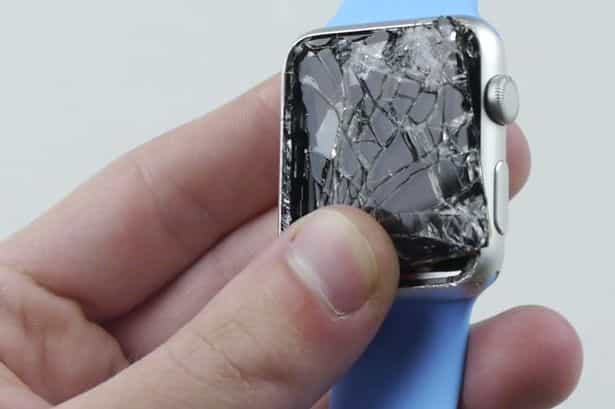
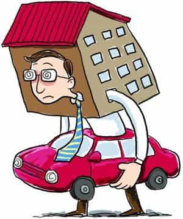
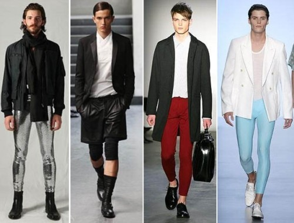
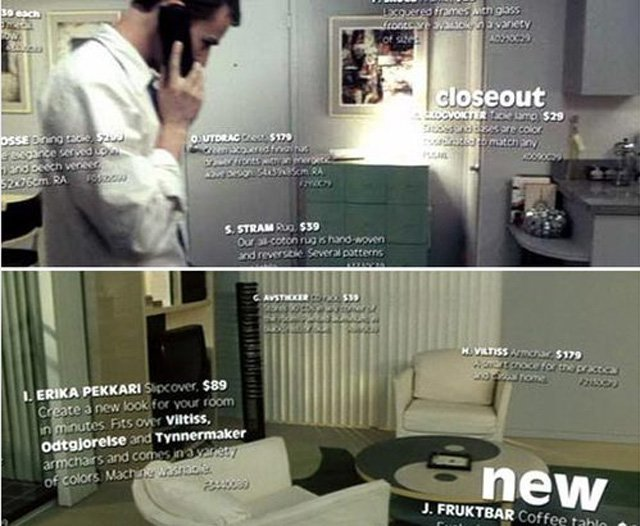

Corey is an iconoclast and the author of 'Man's Fight for Existence'. He believes that the key to life is for men to honour their primal nature. Visit his new website at primalexistence.com


The economy is a mess and many young people are struggling more than they would like to admit. It is during times like this that men are offered an opportunity to awaken their masculine virtue to triumph over their materialistic world. When scarcity hits hard, men will either falter and become trapped in a cycle of financial and moral poverty or use the challenge as a means to actualize their potential.
If you are strapped for cash or are looking for ways to save more money, consider choosing a minimalistic lifestyle to maximize your potential. Try following the tips below to invest your limited resources on the one thing that matters most: your life.
The trick that helped me curb my foolish spending spree was to keep a record of my finances. As they say: What gets measured, gets managed. It is very simple to do and it will help you keep track of where all your cash is going. To do this, on a notebook or a spreadsheet program, record and list all your expenses and income for each month (it’s much easier and efficient if you round everything to the nearest dollar). And at the end of the month, total up your income and expenses to see just how much you’re spending and saving. After tracking your finances for a while, you become conscious of your own spending habits and learn to restrain when necessary.

It’s simple: The money you invest in creating experience and value for yourself will stay with you for life; buying for pleasure and status is shallow and will not last long. Good places to spend your money on are knowledge, skill, health, strength, business, and other ventures. Don’t be the fool spending money on vanity.

Objects are just objects, and unless you apply some non-existent value mentally, its only value is in what you can do with it. For example: a Rolex watch does the exact same thing that a cheap watch does, so what’s the point of dishing out a large sum of cash for something that does the same simple job? Always think in terms of utility and durability. Nothing else really matters.
And although you want to save money by not wasting it on luxuries, note that buying something cheap isn’t always the best option. Buying cheap may save you money instantly, but it may cost you in the long run when it starts to break down and become a useless junk. Sometimes, you need to invest more for the quality and durability.
This is not to say that you should not use credit cards, but rather than you should never buy something with a credit card that you cannot pay off in full each month.
I personally never buy anything on credit. When I need something, I buy it when I have the money and pay everything up front. The idea of enslaving myself with debt is so ridiculous to me that I can only shake my head when I hear about people getting a new television set—which they can barely afford—with monthly payments.

These are the two biggest money drains that shackle people. Depending on your location and job, having a car might be something that is necessary. Home ownership, on the other hand, has long proven to be a scam. After witnessing what others put themselves through just to keep a home, I know I would always rent rather than be a mortgage slave.

Another place you can save an extra cash is by canceling your gym membership for body-weight training. With calisthenics, you don’t have to get a long-term membership and you don’t even need to commute. You can do all your workout at home with just basic equipment like a fitness mat and a pull-up bar which are cheap and easy to obtain.
Yes, calisthenics isn’t likely to get you the same results as working out in a gym, but if you just want a decent workout that will also help with your balance and flexibility—and with less chance of injuries—then calisthenics should be fine for you.
The only drink you really need is water. Besides the occasional green tea, I don’t ever see the point in wasting money on other drinks and beverages.
I never felt the need to drink coffee—I never started the habit and I don’t see any reason to do in the future. It’s strange for me to see bunch of cranky people at the local Starbucks or Tim Horton’s line up for a cup of coffee in the morning like zombies. I think many of these people vastly underestimate the importance of sleep and should really find ways to invest more of their time to it than looking for their fix of caffeine on a daily basis.
Soda is a can of liquid sugar. Nothing more needs to be said. Alcohol is a toxin. I only drink socially and almost never more than a beer. They’re too expensive for the little to no value they provide. But of course, just how much you decide to drink will vary widely depending the lifestyle that you choose.

Not only are they a waste of money, but they’re often detrimental to your health. Either get healthier snacks like nuts and fruits or just wait until your meal time.
Eating out can be convenient, but costly. Learn to cook healthy meals for yourself and save money.
You’re a man, you have better things to do than to be “entertained” in front of a screen. Stop throwing your money and time away on movies, television, video games, porn, and what not. (And don’t even get me started with sports fans who buy expensive jerseys with another man’s name on them.) Cancel everything and get rid of them all. There are so many other meaningful things you could be doing with your life.

Nothing says consumer culture gone mad like the sight of sheeple lining up in front of Apple stores for the latest version of the iPhone that does the exact same thing as the one they already own. Who could have predicted that planned obsolescence would go so far?
Phones and other electronic devices have become the most vapid status symbols of our age. Just get a decent device that will do the job for years to come, and stop placing the value of electronic products above your own individual self.
The human race gave gone along just fine without a shampoo until about some decades ago. Shampoo is essentially a chemical toxin that destroys the natural oil in your hair, prompting you to use another chemical product—the conditioner—to restore your damaged hair. It’s the perfect business.
Roosh himself posted the result of his experience of not using shampoo and I myself have gone from using it twice daily to none at all with great results. I can say for certainty that my hair now is much healthier than ever before in my adult life.

I’ve met men who take their fashion more seriously than a woman. For Pete’s sake, just buy a few things that you need that look good and no more. You’re not a woman, you don’t need to go shopping every week to play dress-ups.

There is nothing more pathetic than seeing men cover up their insecurity and inadequacies with expensive objects. You don’t need jewelries like a woman, you don’t need that tattoo, and you don’t need pieces of “art” scattered around your house. Keep your life simple and invest in yourself instead.
College is the biggest scam that is oppressing young people today. Anyone who is considering college should check out the student loan debt clock and see if they want to be part of that number. And if you insist, be smart about the path you choose. Your dreams may seem set now, but they’ll pop like a bubble when the reality hits you like a sledgehammer. For all those who are starting to plan out their future, Mike Rowe has a message for you:

The point of saving money, of course, isn’t necessarily to live like a Buddhist monk (although that is a possibility if you seek an ascetic life), the point of it is to prioritize what you truly value in life. With more money, more time, and less clutter to distract you, you will be in a better position to strive ahead towards your goals and ambitions.
Using the tips I mentioned above (minus the fact that I went to university), I was able to pay off all my student loan and save around $10,000 working a part-time job. I would have saved thousands more if I had applied those principles sooner. And I was able to accomplish this within few years of my graduation while living in a meaninglessly expensive hellhole in Canada. While others are still stuck because they blew their money on brainless “fun,” I invested my time and money on self-improvement and I’m now in a better situation than they can ever hope for.
You always have the choice between living for the moment and living for life. Choose wisely.
Read More: 20 Things You Can Do Instead Of Playing Video Games